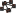
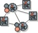

Artifacts >
Artifacts >
 Test Artifact Set >
Test Artifact Set >
 {More Test Artifacts} >
Test Implementation >
{More Test Artifacts} >
Test Implementation >

Test Suite
 Artifacts >
Test Artifact Set >
{More Test Artifacts} >
Test Implementation >
Artifact:
| ||||||||||||||||||||||||||||||||||||||||||||||
 Test Suite |
A package-like artifact used to group collections of Test Scripts, both to sequence the execution of the tests and to provide a useful and related set of Test Log information from which Test Results can be determined. |
| UML Representation: | There is no UML representation for this artifact. |
| Role: | Test Designer |
| Optionality/ Occurrence: | One or more artifacts. Considered informal and optional in some domains. Where not used, individual tests are executed relatively independently. |
| Enclosed in: | Test Suites can be nested hierarchically, therefore one Test Suite can be enclosed within another. |
| Templates: | |
| Examples: | |
| Reports: | |
| More Information: | |
| Input to Activities: | Output from Activities: |
The Test Suite provides a means of managing the complexity of the test implementation. Many system test efforts fail because the team gets lost in the minutia of all of the detailed tests, and subsequently loses control of the test effort. Similar to UML packages, Test Suites provide a hierarchy of encapsulating containers to help manage the test implementation. They provide a means of managing the strategic aspects of the test effort by collecting tests together in related groups that can be reasoned about, planned for, managed, and assessed in a meaningful way.
Each Test Suite needs to consider various aspects, including the following:
There are no UML representations for this artifact or its properties.
|
Property Name |
Brief Description |
| Name | A unique name used to identify this Test Suite |
| Description | A short description of the contents of the Test Suite, typically giving some high-level indication of complexity and scope. |
| Purpose | An explanation of what this Test Suite represents and why it is important. |
| Dependent Test and Evaluation Items | Some form of traceability or dependency mapping to specific elements such as individual requirements that need to be referenced. |
| Preconditions | The starting state that must be achieved prior to executing the Test Suite. |
| Call Sequence Instructions for Test Scripts | The step-by-step instructions for executing the Test Scripts, that are called by the Test Suite, in sequence. |
| Test Suite Observation Points | One or more locations in the instructions where some aspect of the system state will be observed and usually compared with an expected result. |
| Test Suite Control Points | One or more locations in the instructions where some condition or event in the system may occur and needs to be considered in regard to the next Test Script call instruction to be followed. |
| Test Suite Log Points | One or more locations in the instructions where some aspect of the executing Test Suite state is recorded for the purpose of future reference. |
| Postconditions | The resulting state that the system must be left in after the Test Suite has been executed. |
You can begin identifying candidate Test Suites as early as the Inception phase. Implementation of the Test Suite can begin as soon as some Test Scripts have been implemented. A Build is usually required before it is useful to execute a Test Suite. For each test cycle, it's useful to execute a Test Suite that confirms the stability of the Build that the tests to be conducted will be executed against.
The Test Designer is the role primarily responsible for this artifact. The responsibilities are split into two main areas of concern:
The primary set of responsibilities covers the following design and implementation issues:
The secondary set of responsibilities covers the following management issues:
This artifact represents a container for organizing arbitrary collections of related tests. This may be realized (implemented) as one or more automated regression Test Suites, but the Test Suite can also be a work plan for the implementation of a group of related manual tests.
Sometimes these groups of tests will relate directly to a subsystem or other system design element, but other times they'll relate directly to things such as quality dimensions, core "mission critical" functions, requirements compliance, standards adherence, and many others concerns that cut across, or are not directly related to, the internal system elements.
Test Suites should arrange the available Test Scripts—in addition to other Test Suites—in many different combinations. A single Test Script (or Test Suite) may appear in many different Test Suites. Give thought to a variety of Test Suites that will cover the breadth and depth of the Target Test Items.
Some test automation tools provide the ability to automatically generate or assemble Test Suites. There are also implementation techniques that enable automated Test Suites to dynamically select all or part of their component Test Scripts for each test cycle run.
|
Rational Unified
Process
|